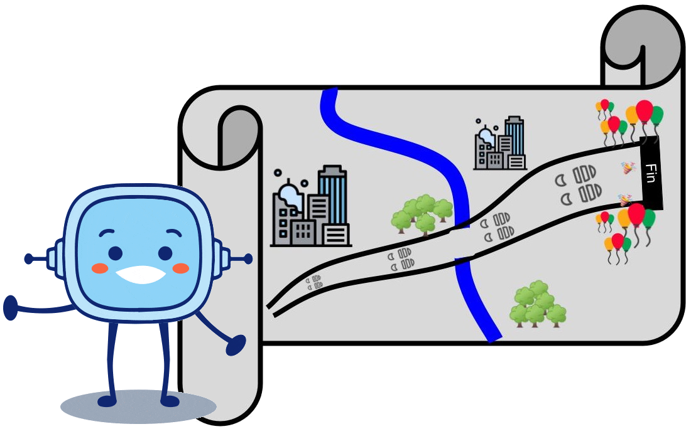

Enumeración, generalmente en forma de columna, de cosas o tareas pendientes que hay que realizar.
Ejemplo:
Lucía me dio una lista de cotejo con todas las actividades que tenía que hacer.
Rúbrica de autoevaluación
Definición:
Herramienta que permite evaluarse a sí mismo la adquisición de los contenidos trabajados.
Ejemplo:
Usé una rúbrica de autoevaluación para saber qué aspectos debía reforzar.
¡Felicidades! Estás llegando al final del camino, has conseguido superar el reto. Ahora es el momento para detenerse a repasar todo lo aprendido y a hacer una valoración del desarrollo de tu aprendizaje.
Lectura facilitada
Felicidades. Estás al final del camino. Ya has conseguido superar el reto. Ahora es el momento para:
detenerse a repasar todo lo aprendido
hacer una valoración del desarrollo de tu aprendizaje.
1. Resumen
2. Autoevaluación
Es el momento de que tú mismo evalúes el resultado de tu reto y tus avances a lo largo de esta aventura. Para ello utilizarás una rúbrica para valorar el reto y una lista de cotejo para el proceso de aprendizaje.
Definición:
Herramienta que permite evaluarse a sí mismo la adquisición de los contenidos trabajados.
Ejemplo:
Usé una rúbrica de autoevaluación para saber qué aspectos debía reforzar.
Definición:
Enumeración, generalmente en forma de columna, de cosas o tareas pendientes que hay que realizar.
Ejemplo:
Lucía me dio una lista de cotejo con todas las actividades que tenía que hacer.
Lectura facilitada
Es el momento de evaluarte a tí mismo. Evalúa el resultado de tu reto y tus avances a lo largo de esta aventura. Para evaluarte utilizarás:
Herramienta que permite evaluarse a sí mismo la adquisición de los contenidos trabajados.
Ejemplo:
Usé una rúbrica de autoevaluación para saber qué aspectos debía reforzar.
Definición:
Lista de tareas pendientes que hay que realizar.
Ejemplo:
Lucía me dio una lista de cotejo con todas las actividades que tenía que hacer.
Lumen dice Manuales para la autoevaluación
Si necesitas un manual para cumplimentar la rúbrica, descárgatelo.
Lectura facilitada
Instrucciones de la rúbrica de autoevaluación:
Cómo funciona la rúbrica La rúbrica se compone de una tabla. En la columna de la izquierda aparece todo aquello a valorar. En el resto de columnas aparecen los diferentes niveles de adquisición. Los niveles de adquisición son: iniciado, suficiente, bueno y excelente. Debes elegir las opciones. La opción adecuada es en la que tú te sitúas. Con la rúbrica conoces los aspectos a mejorar o reforzar.
Cómo cumplimentar la rúbrica Para cumplimentar la rúbrica tienes dos opciones:
Opción A. Directamente desde el ordenador, pinchando en la opción que elijas. Pincha en el cuadro pequeño de la esquina inferior derecha de cada opción. Esta opción te dará automáticamente una nota final.
Opción B. Imprimiendo la rúbrica. Rodea de color rojo las opciones adecuadas. Observa los aspectos dominados y a reforzar.
3. Evalúa tu reto. Opción 1
Rúbrica de Autoevaluación del reto: El mapa de los enigmas
Iniciado (1)
Suficiente (2)
Bueno (3)
Excelente (4)
Participación
He aportado ideas a mi grupo. (1)
He aportado alguna idea útil a mi grupo. (2)
He aportado ideas útiles a mi grupo y he buscado soluciones a las dificultades que hemos encontrado. (3)
He aportado ideas útiles a mi grupo y he proporcionado soluciones a las dificultades que hemos encontrado. (4)
Cooperación
Coopero con mi equipo en las tareas que me piden, pero rara vez tengo iniciativas o ideas (1)
Coopero con mi equipo pero tengo pocas iniciativas en la realización de tareas. (2)
Coopero con mi equipo en la mayoría de las tareas y muestro iniciativa en la realización de las mismas. (3)
Coopero en todas las tareas y siempre tengo iniciativas. (4)
Planificación
Solo he seguido algunas de las instrucciones para la elaboración del reto. (1)
He seguido las instrucciones aunque no los consejos para la elaboración del reto. (2)
He seguido las instrucciones y la mayoría de los consejos para la elaboración del reto. (3)
He seguido las instrucciones y consejos para la elaboración del reto. (4)
Elaboración
He participado en algunas de las fases del reto y no siempre he conseguido resultados aceptables. (1)
He participado en casi todas las fases del reto de manera activa y con resultados aceptables. (2)
He participado en casi todas las fases del reto de manera activa y con buenos resultados. (3)
He participado en todas las fases del reto de manera activa y con buenos resultados. (4)
Materiales resultantes
El resultado de nuestros enigmas para la gincana ha resultado ser un documento simple y muy fácil de resolver por los otros equipos. (1)
El resultado de nuestros enigmas para la gincana ha resultado ser un documento cuyos enigmas no han sido muy difíciles de resolver por los otros equipos. (2)
El resultado de nuestros enigmas para la gincana ha resultado ser un documento completo con cierta dificultad en su resolución por parte de los otros equipos. (3)
El resultado de nuestros enigmas para la gincana ha resultado ser un documento muy completo y cuya complejidad ha forzado al resto de equipos a poner en práctica todos los contenidos trabajados a lo largo de esta aventura. (4)
Puesta en práctica
Apenas he participado en la resolución de los enigmas de los otros equipos. (1)
He aportado alguna idea para la resolución de los enigmas de los otros equipos. (2)
He participado bastante en la resolución de los enigmas de los otros equipos. (3)
He participado de forma activa en la resolución de los enigmas de los otros equipos. (4)
 Definición:
Definición: Definición:
Definición:![imagen que muestra un resumen con el fondo de un mapa en tonos rojos de la ciudad de Sevilla. Un marco con fondo verde esmeralda contiene el título: 'El mapa de los enigmas' y el dibujo de Rétor con un mapa junto al recuadro. En un recuadro con fondo verde apararece de nuevo una imagen de retor y el texto 'la recta numérica: números enteros, La posición de un objeto respecto a otro y Las normas básicas de tráfico'. En la parte superior del recuadro hay otro rótulo amarillo con el texto 'hemos recordado'. Alineado a la derecha hay un tercer recuadro con fondo azul y fuente en blanco con el texto: 'Leer y crear planos y mapas. El sistema de coordenadas. Las simetrías y traslaciones. La escala de los mapas.' En la parte superior derecha de este recuadro hay otro recuadro con fondo rosa con el texto en blanco: 'Hemos aprendido sobre...'](IMG_MAT6PRI_REA06_RESUMEN_V01.png "Coordenadas en el plano")